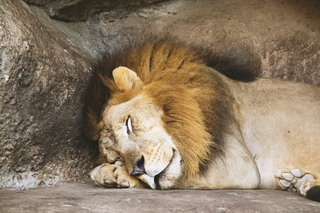
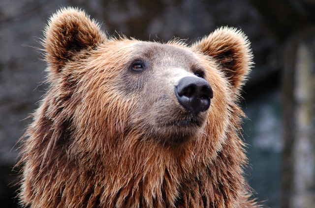
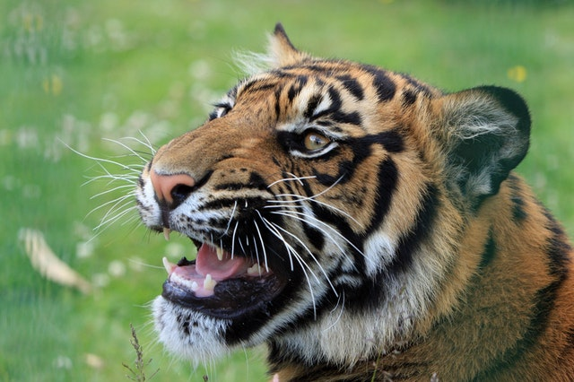
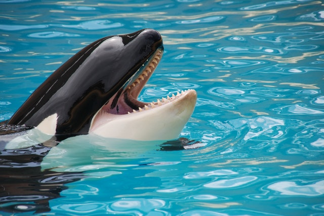
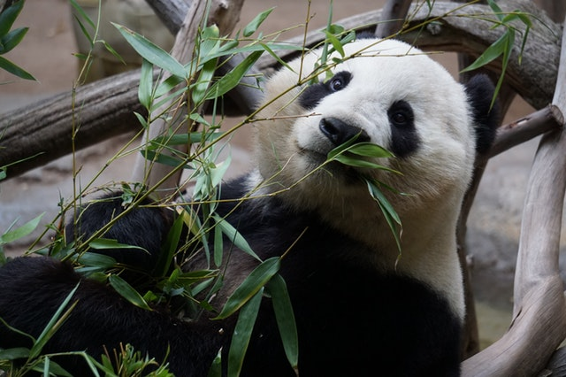
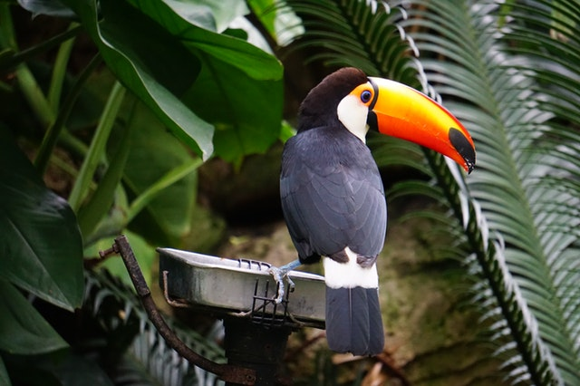

Lav
Lavovi su veoma socijalni u odnosu na druge vrste velikih mačaka i uglavnom žive u čoporima koje čine 10-15 životinja.

Orangutan
Orangutan je stanovnik tropskih kišnih šuma i živi samo na Borneu i Sumatri.

Medved
Medved je najnezgrapnija i najteža zver Evrope. Pokreti mu deluju nespretnije.

Tigar
Tigar je divlja mačka koja živi od Indije na istoku do Kine i Jugoistočne Azije.

Delfin
Delfin je vodeni sisar srodan kitu i običnoj pliskavici, poznat pointeligenciji.

Panda
Panda je sisar iz porodice medveda, poreklom iz jugozapadne Kine.

Ptica
Ptice su razred dvonožnih, toplokrvnih kralježnjaka koji polažu jaja.